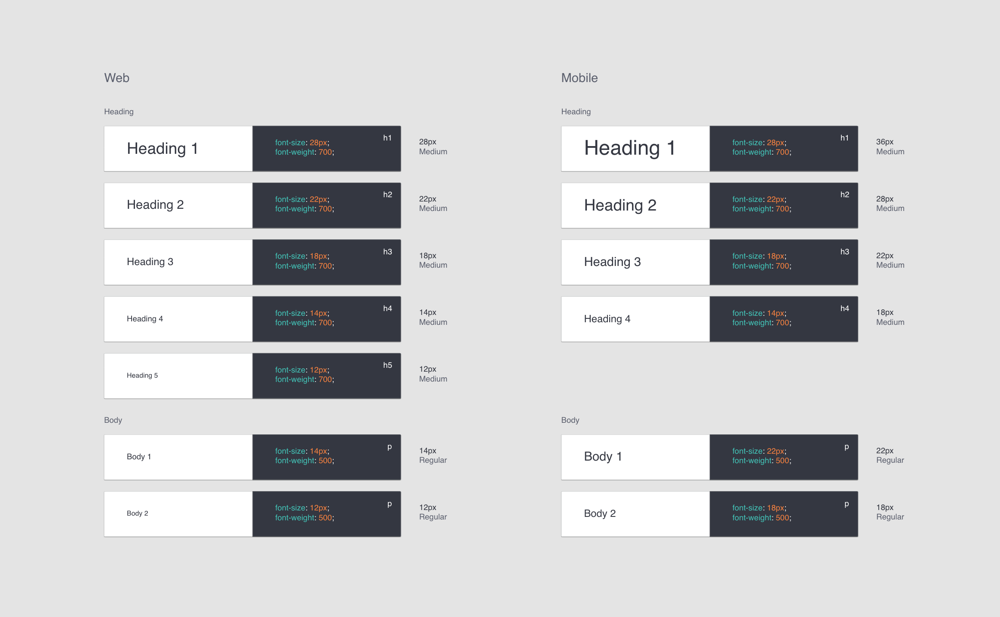
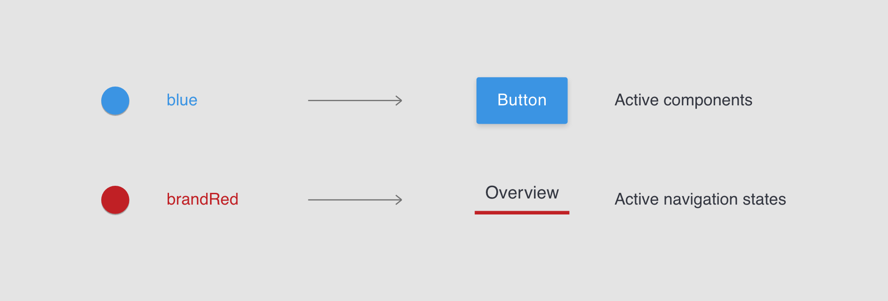
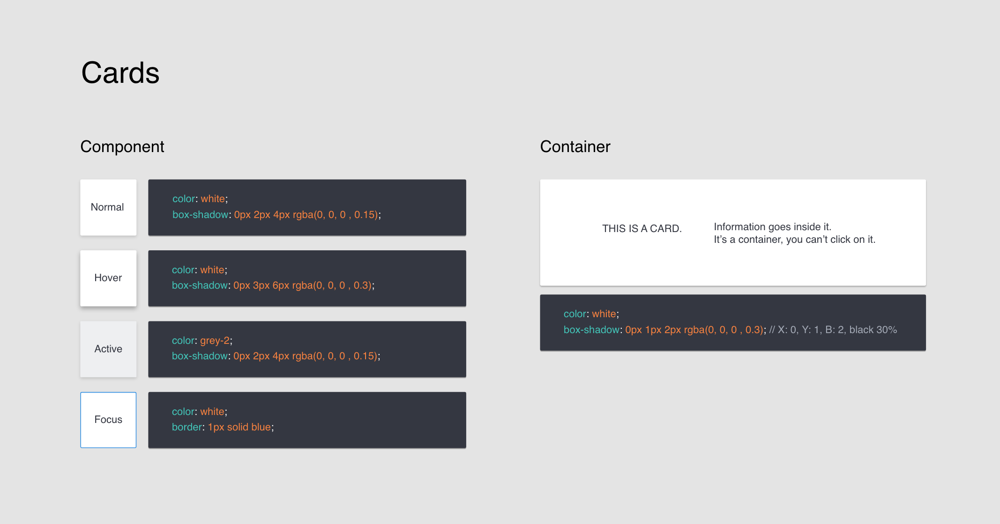

Implementing the first Design System
Project Info
Product: Design System
Role: Lead Designer
Team: 1 Engineer, Design Team (feedback)
Tools: Sketch, HTML, CSS, React
Timeline: July - August 2017
Answering the why
"86% of the greatest design companies use a design system."
Design Genome Project
We are a small design team of 3 people, so what's the point of having a design system? Scalability. It's pretty easy to stay on the same page right now, but any successful company needs to grow!
Inspired by the success of Airbnb's DLS, I initiated this intern project:
1. To create design consistency across projects & platforms
2. To maximize engineering speeds, especially for one-off projects
3. To develop an onboarding resource for designers + engineers
4. To familiarize Airware's clients with our brand + product
The ultimate purpose was to reduce design and engineering debt.
Behind the scenes
This was going to be a 2-month project. Aside from day-to-day product work, this was an extra project that I chose to make time for.
V1 Goals
• Include all the major components
• Reach a level of fidelity and depth that I am satisfied with
• Easily be handed off to the design team to continue working on
Prioritizing
1. Functionality + frequency of use
2. Amount of design + engineering effort
High to low priority (left to right)
Full breakdown
A challenge here: Trading off design time allocated to core functionality to tackle a few of the low-hanging fruits (quick, but still helpful)
Inspiration
To align with industry standards, I looked through many existing design systems before cracking open my sketchbook.
Good examples
Material Design (Google)
Human Interface Guidelines (Apple)
Carbon Design System (IBM)
Shopify Polaris (Shopify)
Atlassian Design Guidelines (Atlassian)
Many companies have one, but not all of them are good...
Without careful thought, design systems often become increasingly more difficult to maintain as more content is introduced. This design system will seek to change that.
What worked well
• Use of DOs and DON'Ts
• Guidelines that allow new styles to be added
• Interactive on-screen components
• Differentiating between component usage and styling
• Relevant resources for download
What I didn't like
• Consumability: Long, wordy explanations without examples
• Confusing navigations: Finding info in unexpected places / sections
• Contrasting needs: Set up for engineers or designers, but not both
Different Insights
Design team:
"A source of truth..."
Engineer on project:
"CSS, not just design specs. We'll move much faster." *
Engineering team:
"A component library."
"Easy to follow design rules (for engineers)."
Product team:
"Something that gives Airware a presence in the design world — shows we care about design, because we do!"
Marketing team:
"A link to share with our clients so we don't have to send them our brand book everytime."
Note: I can code, so I was happy to help with CSS. *
Into the sketchbook
Step 1: Wireframing

On my last day, I used up the last page of this sketchbook. Very satisfying.
Whiteboarding sessions with the team + low-fidelity sketches definitely sped the process up. We used it as a quick proof of concept before going heads down in Sketch.
Step 2: Iterating a million times in Sketch

Especially for the main skeletons such as Color, it took many iterations to reach anything close to "final". The above are some examples!
Major Changes
Sometimes, it's difficult to consider all the use cases in the initial design. Many times as well, we discovered that the visual + interaction design would break between projects and platforms!
Read about the major changes in the DDD section.
Where I landed
Highlights
I left this project in a place that I was happy with:
• 93% of styles + components planned for V1 were reactified
• The link was live and shared within the company
• A PDF version was adapted for the Marketing team
• A consistent symbols library now linked all our design files
1. Engineering outcomes
It significantly boosted engineering productivity on new projects (triggered by our recent acquisition of Redbird). Engineers commented that not only did it speed up the front-end dev process, but that the framework encourages consistency across code, in addition to a reduced need to consult designers on each little piece of design detail.
2. Design outcomes
As the design team kicked off a Redbird project, we found designing to be much more efficient without the need to dwell on visual execution or to search through our products for existing patterns. Instead, we could focus on the actual interation + product design. It's also just nice to have a source of truth and fewer components to spec out (yay)!
3. Marketing outcomes
While I was there, I created a PDF verison for the Marketing Team to share with clients. It was definitely an added convenience for the team, however it's still difficult to evaluate how clients themselves have benefitted from it (relative to the original brand book).
Difficult Design Decisions (DDD)
DDD #1: Base UI colors

Iteration 1
In the initial version of our color palette, I focused on establishing 2 sets of UI for our product, consisting of both light and dark interfaces. A gray color was selected as an anchor to connect the contrasting sets.
Iteration 2
We quickly realized that 1 gray color was not enough to satisfy the complexity of visuals needed within our product. Thus, I extended the palette to a full gradient, discarding the "sets" of colors I had previously.
The biggest challenge here was selecting colors of the same warmth / coolness while distributing the gradient evenly.
Iteration 3
Although the gradient provided a wider selection of colors to choose from, it lacked in the visual direction the first palette presented (which distinguished the core colors + its supporting ones).
In the third version, the colors still make up the colors in the gradient, but are simply formatted to highlight only 3 main colors in the UI.
DDD #2: Mobile + Web Fonts

Iteration 1
I started by defining standard XS, SM, MD, LG, and XL font sizes that worked for all platforms. This concept failed very quickly as we learned that mobile + web supported very different needs. While our web app was mostly used in an office setting for data processing, the mobile app was often used onsite in direct sunlight by older-aged drone operators.
Text needed to be larger than XL for mobile, and smaller than XS for web. Universal sizes were not versatile!
Iteration 2
I established separate font stacks for mobile + web, while maintaining as much overlap as possible. All "mid-sized" fonts were still identical, with mobile adopting a larger font and web taking on 2 smaller fonts.
Iteration 3
Similar to iteration 2... but now with usage patterns defined! The actual style guide details the use cases for heading vs body text + visual patterns to follow, e.g. body text should never be bold.
DDD #3: Active state consistency
Much of our core navigation uses Airware's Red for active / hover states. Unfortunately, this red is not subtle enough for all use cases (and tends to scream error). To accommodate, we started using blue for certain components, which has introduced inconsistencies across our platform.
A temporary solution
Since Airware had just recently acquired a company called Redbird, it seemed like the perfect time for a design revamp, as naturally the two products looked significantly different.
Blue for components, red for universal navigation
The solution I proposed and tested was to have all products link back to a central navigation, identified by our brand red color. No other UI components were allowed to use this red color as it signified the top-level hierarchy on our platform. Each product should then own a single dominant UI color unique to itself.
DDD #4: What exactly is a "card"?

Cards as components versus containers
Prior to this design system, cards were all over the place. In the codebase, there was only 1 type of card defined — the container. This interaction seemed to break in places where cards didn't behave as "containers".
Differentiating use cases
To address this discrepancy, I introduced cards as another component type. This simply means that cards, when acting as components, are defined by unique states and interactions (unlike static card containers).
The challenge here was determining the boundaries between the two card types, i.e. when is a card a component vs a container?
Lessons learned
A lot was to be learned, both from a design and project management standpoint. This was the first time where I experienced absolute ownership over my project — that was amazing.
I struggled with most...
Change — Should I push for change or stick to what's most consistent?
Scalable Design — Is what I am designing scalable? Does the pattern break across platforms? What if we introduce a new product?
Tradeoffs — Design tradeoffs were made to accommodate for product constraints + contrasting use cases. How can I accurately evaluate which tradeoffs are worth it?
Going Forwards
There were things we wanted to do, but did not have time for. There were areas we knew we wanted to improve on, but did not have a better solution for just then. There were also problems we didn't even know existed until we received feedback from teams using the design system.
TL;DR — there's so much room for feedback + change.
1. An Onboarding Resource
I didn't get to Goal #3 (creating an onboarding resource) in V1. We should work towards leveraging the web component of the design system as a training platform for new hires.
Each tab aggregates resources with a structured training plan.
2. Interactive Components
Interactive components not only reduce content + noise, but also allows users to get a feel for the way components work on our actual product!
3. Linking the design framework
Changes to components in the codebase should automatically be reflected on the web style guide (linked libraries = 1 source of truth).
4. Going Open Source
It's a great way to get feedback from the community about our design system and to give Airware the design presence we need!